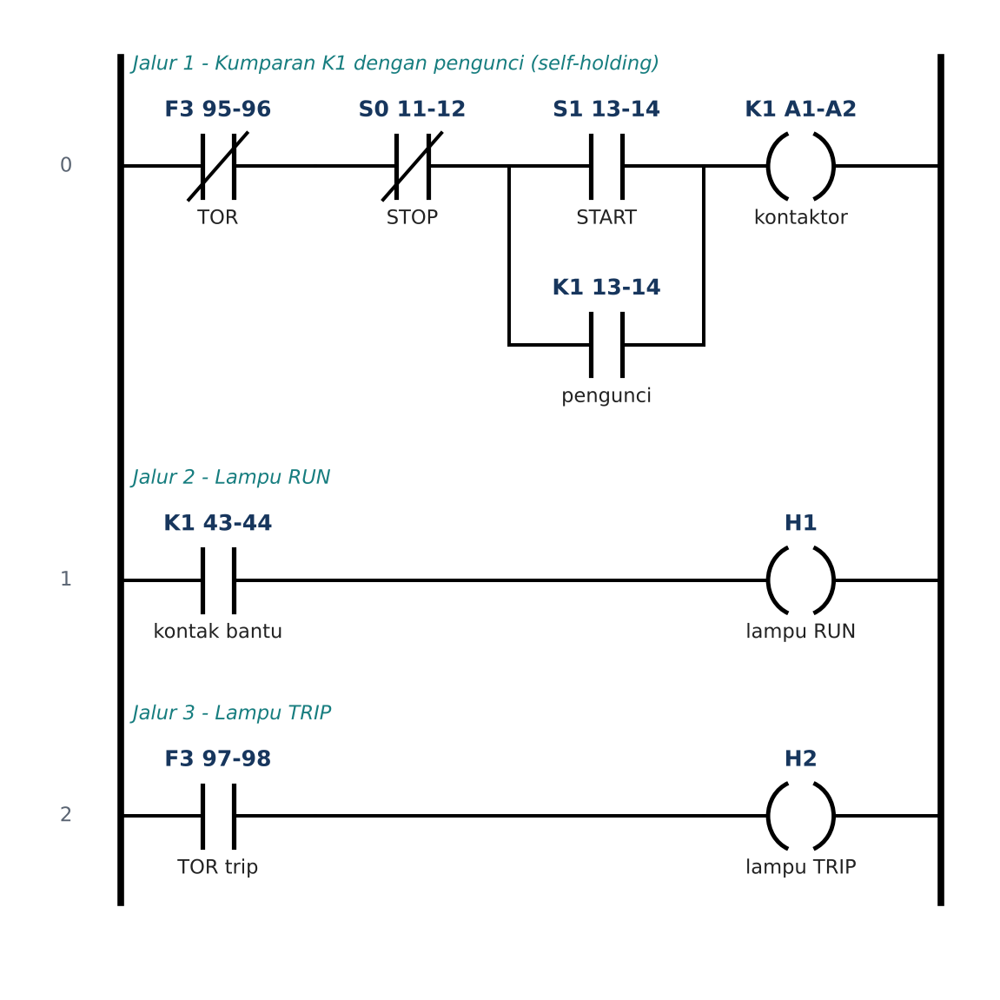
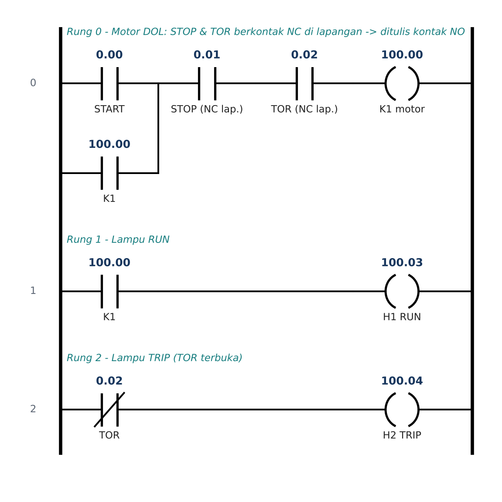
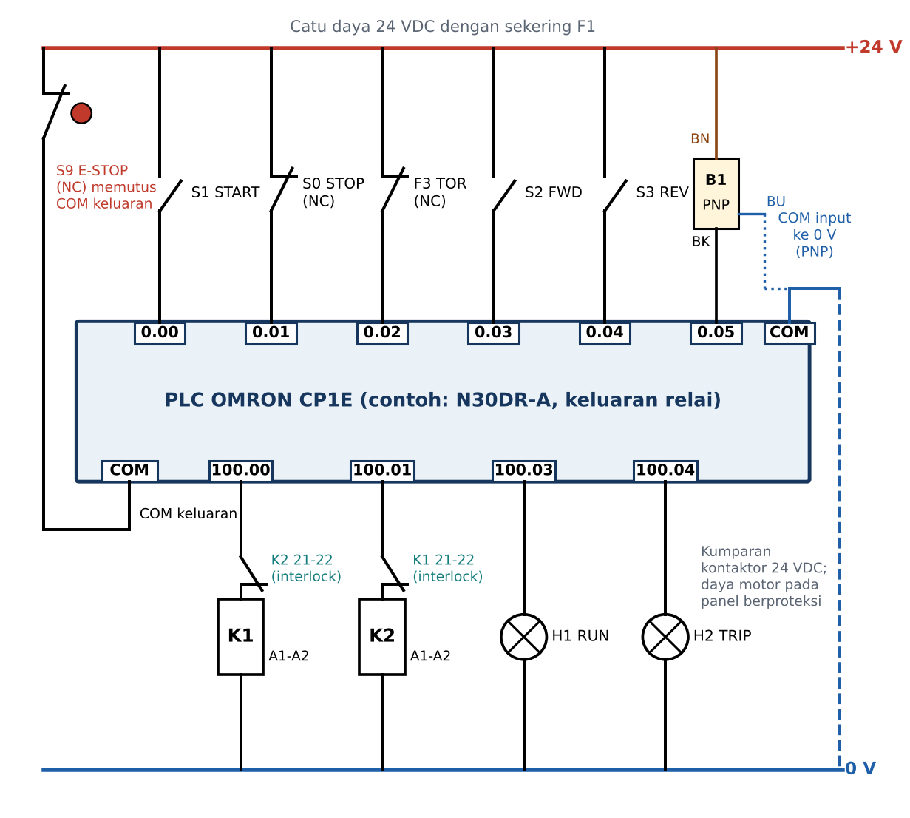
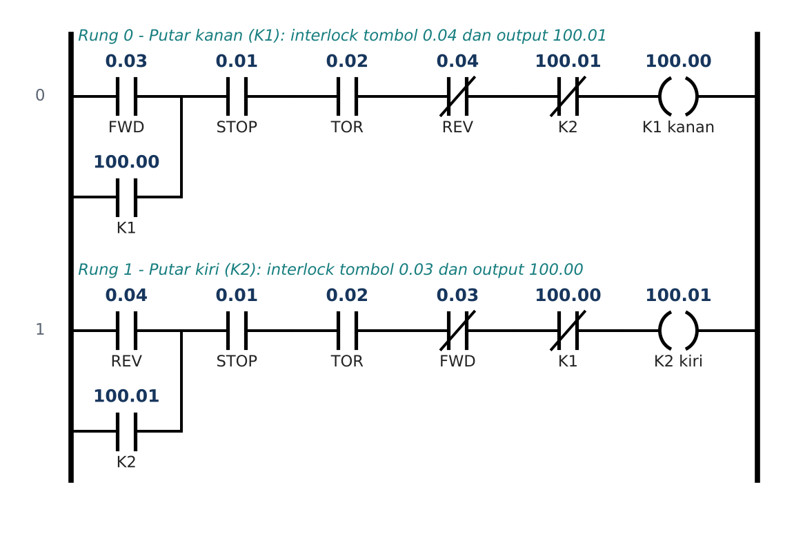
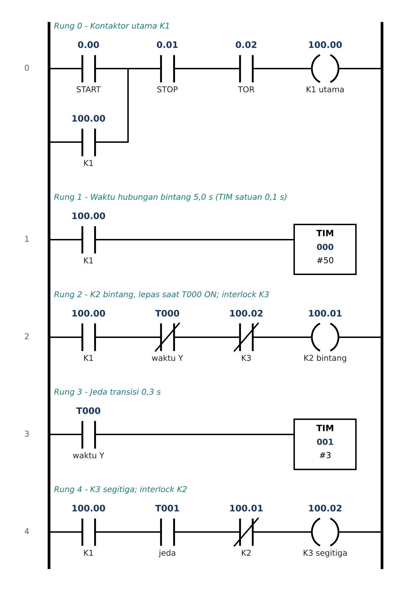
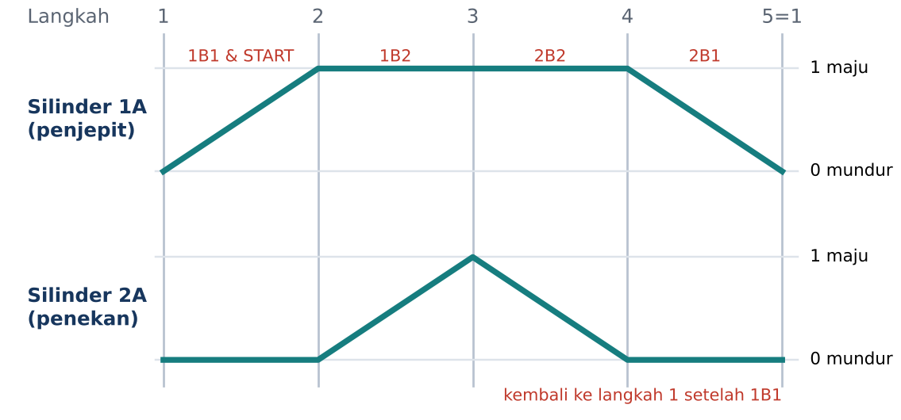
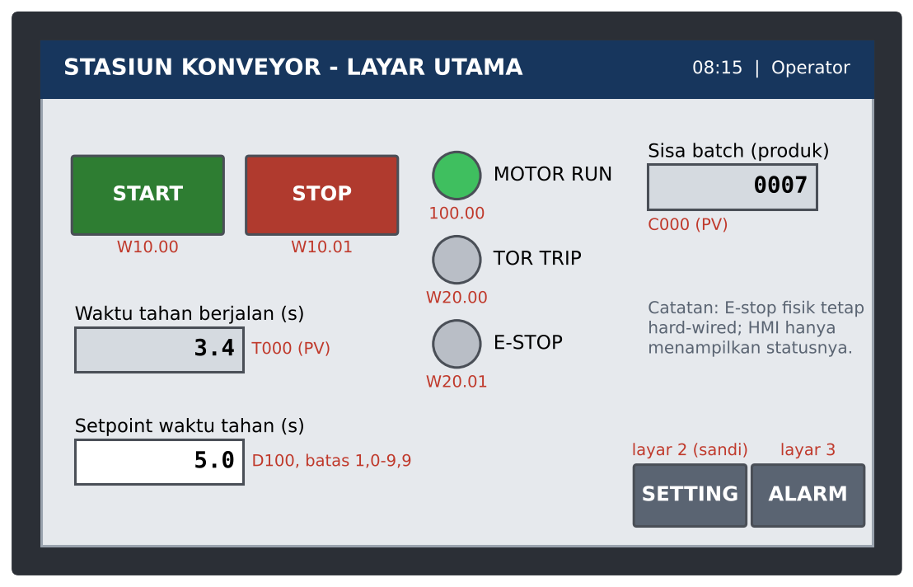
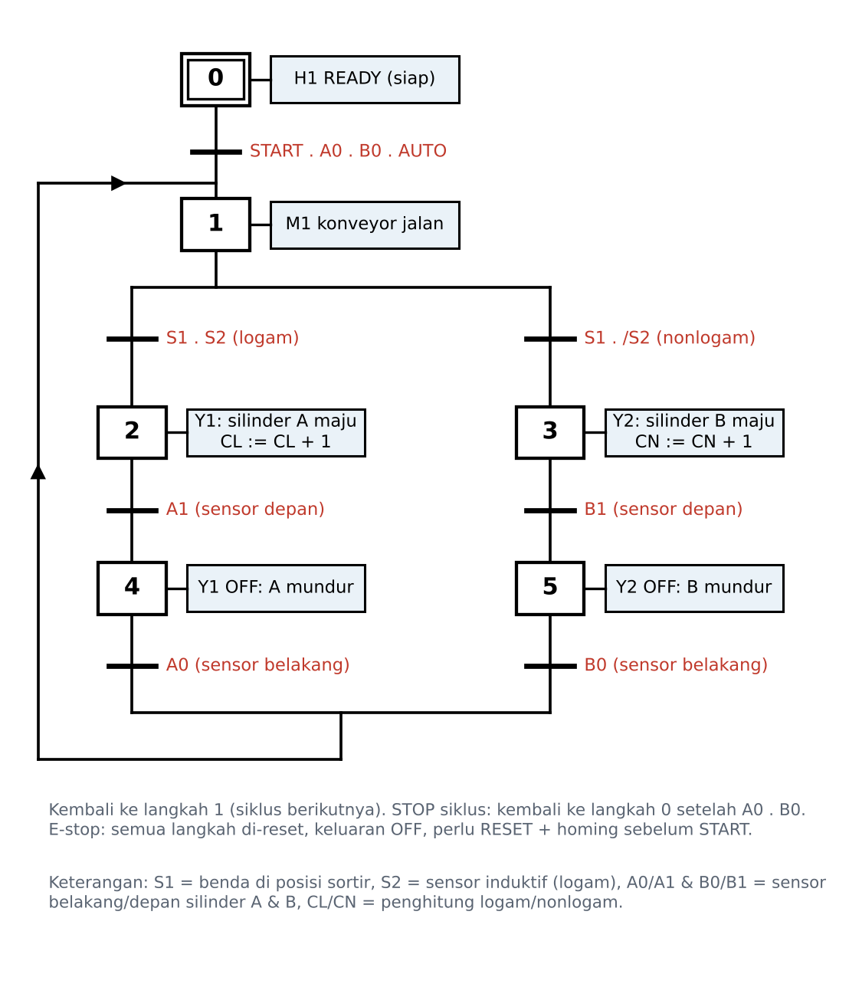
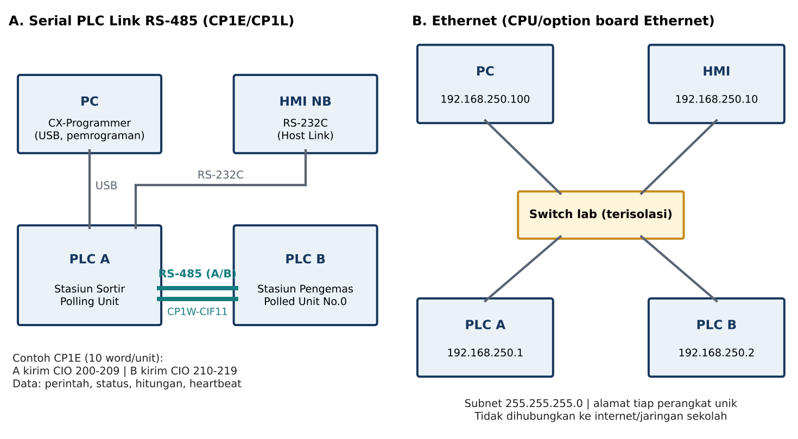

Dari kontak relay sampai PLC berjaringan, dibuktikan dengan uji
Satu tahun, delapan modul: relay logic, konsep PLC, wiring dan commissioning, pemrograman ladder Omron, elektropneumatik dan hidrolik, HMI, proses produksi, dan jaringan PLC. Setiap konsep bisa langsung dicoba di simulator: tekan tombol, lihat aliran daya di ladder, lalu uji programmu dengan skenario normal dan gagal.
Yang bisa dilakukan di web ini
Simulator ladder Omron
Tulis mnemonik (LD, AND, OR, OUT, SET, KEEP, DIFU, TIM, CNT, …), lakukan program check, lalu jalankan pada panel motor, konveyor, silinder pneumatik, press hidrolik, atau stasiun sortir.
Misi teruji otomatis
Pemeriksa menjalankan programmu dengan skenario: START dan STOP bersamaan, TOR trip, kontaktor lengket, sensor tidak terbaca, E-stop di tengah siklus.
Multimeter dan commissioning
Cari gangguan rangkaian DOL dengan multimeter virtual, dan lakukan I/O check pada trainer yang menyimpan kesalahan wiring.
LKPD dan log digital
Delapan LKPD, I/O list, test log, troubleshooting log, communication log. Semua tersimpan di HP dan bisa diunduh sebagai laporan.
Modul
Relay logic untuk kendali motor
Komponen dan simbol, diagram kontrol-daya, pengunci, interlock, timer, troubleshooting.
Modul 2 · P6-7 · TP 5.2Konsep dan arsitektur PLC
Struktur PLC, siklus scan, area memori Omron, IEC 61131-3, konversi relay ke ladder.
Modul 3 · P8-10 · TP 5.3Wiring dan commissioning
I/O list, sensor NPN/PNP, kerapian wiring, power-off check, I/O check, dokumentasi.
Modul 4 · P11-16 · TP 5.4APemrograman PLC elektromekanik
Instruksi bit, SET/RSET, KEEP, deteksi tepi, interlock, timer, counter, troubleshooting.
Modul 5 · P17-22 · TP 5.4BElektropneumatik dan hidrolik
Katup dan silinder, sensor posisi, diagram langkah, F = p × A, kendali dua tangan, pick-and-place.
Modul 6 · P23-25 · TP 5.5Human-machine interface
Desain layar, koneksi HMI-PLC, tag, setpoint berbatas, alarm, level akses.
Modul 7 · P26-29 · TP 5.6PLC pada proses produksi
GRAFCET, mode auto/manual, E-stop, reset, homing, counter produksi, uji penerimaan.
Modul 8 · P30-32 · TP 5.7PLC dalam jaringan
Piramida otomasi, RS-485 dan Ethernet, Serial PLC Link, heartbeat, diagnosis gangguan.
Simulator di web ini dibuat untuk belajar. Perilakunya mengikuti PLC Omron seri CP sejauh yang dibutuhkan materi, tetapi tidak menggantikan CX-Programmer, trainer, dan validasi oleh guru atau personel kompeten.
Identitas dan tujuan
Disusun dari Paket Perangkat Ajar Sistem Kendali Industri kelas XII Teknik Elektronika Industri tahun pelajaran 2026/2027 (CP 046/H/KR/2025, Pembelajaran Mendalam 8-3-3-4).
Capaian pembelajaran
Sumber: Keputusan Kepala BSKAP Nomor 046/H/KR/2025, elemen Sistem Kendali Industri Fase F. Urutan tujuan mengikuti ATP Teknik Elektronika Industri yang dilampirkan guru (TP 5.1-5.7). Kompetensi 5.4 dipecah menjadi 5.4A (elektromekanik) dan 5.4B (elektropneumatik dan hidrolik).
Tujuan pembelajaran dan bukti
Alur belajar
Projek tahunan: Mini Stasiun Produksi Otomatis
Karakteristik mata pelajaran dan murid
Kerangka Pembelajaran Mendalam 8-3-3-4
K3 listrik, fluida, jaringan, dan etika
Sistem kendali menggerakkan motor, silinder, dan konveyor. Kesalahan kecil bisa melukai orang. Aturan ini berlaku di setiap pertemuan; centang setelah kamu membaca dan memahaminya.
Wiring hanya diubah saat power-off dengan LOTO. Power-on hanya atas izin guru. E-stop selalu hard-wired: kontak NC-nya memutus daya aktuator, bukan sekadar input program atau tombol layar HMI. Pengaman (TOR, interlock, E-stop) tidak pernah di-bypass. Forcing hanya atas izin guru dan dibatalkan setelah uji.
Urutan aman setiap pertemuan
Sebelum
APD, area kerja bebas, rambut dan pakaian rapi, kenali letak E-stop, periksa trainer dalam kondisi power-off.
Selama
Uji pertama tanpa beban, kecepatan dan tekanan rendah. Satu perubahan setiap kali, lalu catat hasilnya.
Sesudah
Batalkan forcing, backup program berversi, buang tekanan udara/hidrolik, matikan dan kunci daya, rapikan bengkel.
Rangkaian kendali praktik memakai 24 VDC. Rangkaian daya motor 220/380 VAC hanya pada panel trainer tertutup berpengaman (MCB, RCBO/ELCB, TOR) dan di bawah pengawasan langsung guru atau teknisi. Produk praktik tidak dipakai untuk mengendalikan mesin industri nyata tanpa validasi personel kompeten.
Alat dan aplikasi
Materi, simulator, kuis, dan LKPD di web ini cukup dibuka di browser HP. Untuk praktik di perangkat sungguhan, siapkan software dan trainer berikut.
| Perangkat / aplikasi | Kegunaan | Catatan |
|---|---|---|
| Web ini | Materi, Lab PLC, lab gangguan, commissioning, HMI, jaringan, kuis, LKPD, log | Semua perangkat (browser) |
| CX-Programmer (paket CX-One) | Memprogram PLC Omron, program check, simulasi, monitoring, force, PLC Settings | Windows, berlisensi; gunakan lisensi sekolah |
| NB-Designer | Membuat project HMI Omron seri NB, simulasi offline/online | Windows, dari situs Omron |
| Simulator rangkaian kendali (mis. CADe_SIMU) | Menggambar dan menguji rangkaian relay logic | Windows; atau perangkat sejenis yang tersedia |
| Simulator fluida (mis. FluidSIM) | Rangkaian pneumatik/hidrolik bila trainer terbatas | Sesuai lisensi sekolah |
| Trainer | PLC Omron seri CP (CP1E/CP1L/CP2E), HMI NB, panel kendali motor berproteksi, trainer elektropneumatik/elektrohidrolik | Alamat contoh di web ini: input 0.00 dst., output 100.00 dst. |
| Multimeter, obeng berisolasi, kabel, ferrule, marker | Wiring, power-off check, troubleshooting | Periksa kelayakan alat ukur sebelum dipakai |
Alamat I/O standar trainer
Input 0.00 START, 0.01 STOP (NC), 0.02 TOR (NC), 0.03 FWD, 0.04 REV, 0.05 sensor produk (PNP), 0.06 RESET. Output 100.00 K1, 100.01 K2, 100.02 K3, 100.03 H1 RUN, 100.04 H2 TRIP, 100.05 H3 batch selesai. Stasiun pneumatik, hidrolik, sortir, HMI, dan jaringan memakai tabel I/O di modulnya masing-masing. Sesuaikan dengan tipe CPU trainer.
Memakai web ini tanpa internet
Status di browser ini: memeriksa…
- Buka web ini sekali saat ada internet. Salinannya disimpan otomatis oleh browser.
- Setelah itu web bisa dibuka ulang tanpa internet di browser yang sama (bukan mode penyamaran).
- Kemajuan, jawaban kuis, LKPD, log, dan program Lab PLC tersimpan di browser masing-masing, tidak dikirim ke mana pun. Kumpulkan lewat halaman Kumpulkan hasil.
Peta 32 pertemuan
Semester ganjil pertemuan 1-16 (Modul 1-4), semester genap pertemuan 17-32 (Modul 5-8). Setiap pertemuan memakai pola Pendahuluan, Memahami, Mengaplikasi, Merefleksi, Penutup. Centang pertemuan yang sudah selesai; kemajuannya tampil di menu.
Alokasi waktu
Bawaan dokumen: 3 JP × 45 menit = 135 menit. Ubah bila struktur kurikulum sekolah berbeda; setiap pertemuan menampilkan pembagian waktu dan langkahnya di "Rincian pertemuan".
Tanggal mengikuti kalender pendidikan, jadwal PKL, dan pembagian mapel konsentrasi. Jika jadwal blok praktik dipadatkan, urutan subbab tetap dipertahankan.
Relay logic untuk kendali motor
Relay logic adalah "program" yang ditulis dengan kabel: susunan kontak seri dan paralel menentukan perilaku mesin. Setiap kontak harus bisa dijelaskan fungsinya dan dibuktikan keamanannya.
P1Komponen kendali elektromagnetik, simbol, dan K3 panel
Motor besar tidak dinyalakan dengan sakelar biasa. Arusnya besar, operator perlu mengendalikan dari jauh dengan tegangan rendah, dan motor butuh pengaman beban lebih serta penguncian. Tugas itu dikerjakan oleh komponen kendali elektromagnetik: tombol kecil mengendalikan kumparan kontaktor, lalu kontak utama kontaktor yang menyambung arus motor.
| Komponen (kode) | Penandaan terminal | Fungsi |
|---|---|---|
| MCB (Q1) | 1-2, 3-4, 5-6 | Proteksi hubung singkat dan beban lebih saluran daya; sekaligus pemutus. |
| Sekering kontrol (F2) | - | Melindungi rangkaian kontrol. |
| Kontaktor (K1) | Kumparan A1-A2; kontak utama 1-2, 3-4, 5-6; bantu NO 13-14, 43-44; bantu NC 21-22 | Sakelar elektromagnetik: kumparan kecil menarik kontak utama untuk arus motor. |
| Relay bantu (K) | A1-A2, kontak bernomor | Memperbanyak kontak sinyal; tidak untuk arus motor. |
| Thermal overload relay / TOR (F3) | 95-96 NC, 97-98 NO | Memutus kumparan kontaktor saat motor kelebihan beban (bimetal memanas). |
| Tombol tekan (S) | NO 13-14 (umumnya hijau, START); NC 11-12 (merah, STOP) | Perintah operator; kembali sendiri saat dilepas (momentary). |
| Emergency stop (S0) | NC, terkunci saat ditekan | Menghentikan bahaya; dilepas dengan memutar. |
| Selector | NO/NC sesuai posisi | Memilih mode, misalnya MANUAL/AUTO. |
| Lampu indikator (H) | X1-X2 | Status: RUN, TRIP, siap. |
| Timer (KT) | A1-A2; kontak tunda NC 55-56, NO 67-68 | On-delay: kontak berubah setelah waktu tunda sejak kumparan ON. Off-delay: kontak kembali setelah waktu tunda sejak kumparan OFF. |
NO, NC, dan fail-safe
NO (normally open) terbuka saat tidak ditekan; NC (normally closed) tertutup saat tidak ditekan. STOP dan E-stop memakai NC karena fail-safe: bila kabelnya putus atau kontaknya rusak terbuka, rangkaian ikut terputus dan mesin berhenti. Dengan NO, kabel putus membuat STOP mati fungsi padahal motor tetap jalan.
Membaca rating
- Tegangan kumparan harus sama dengan tegangan rangkaian kontrol (mis. 24 VDC atau 220 VAC). Kumparan 24 VDC yang diberi 220 VAC akan terbakar.
- Kategori AC-3 menyatakan arus kontak untuk menyalakan dan mematikan motor induksi sangkar saat berjalan. Pilih kontaktor dengan arus AC-3 ≥ arus nominal motor.
- Setelan TOR diatur sama dengan arus nominal motor pada pelat nama.
Identifikasi dan uji kontinuitas komponen dilakukan dalam kondisi power-off. Kenali letak E-stop sebelum praktik. Gunakan multimeter pada fungsi kontinuitas/ohm saat panel tidak bertegangan. Latihan mengukur kontak bisa dicoba di Lab gangguan (mode latihan bebas).
P2Diagram kontrol-daya dan rangkaian pengunci (DOL)
Satu rangkaian motor punya dua gambar. Diagram daya menunjukkan jalur arus besar: MCB 3 fasa → kontak utama K1 → TOR → motor. Diagram kontrol menunjukkan logikanya: sekering → TOR 95-96 → STOP → START yang diparalel kontak bantu K1 13-14 → kumparan K1.

Pengunci (self-holding): setelah START ditekan, K1 menarik dan kontak bantunya 13-14 ikut menutup. Karena kontak itu paralel dengan START, arus kumparan tetap mengalir saat START dilepas. STOP (NC, seri) memutus jalur dan K1 lepas. TOR trip juga memutus jalur, sementara kontak 97-98-nya menyalakan lampu TRIP.
Penomoran kabel dan referensi silang
Setiap titik sambungan diberi nomor kabel yang sama di diagram dan di marker kabel. Referensi silang menunjukkan di jalur mana kontak bantu sebuah kontaktor dipakai, sehingga teknisi bisa menelusuri rangkaian tanpa menebak.
Urutan uji rangkaian DOL (isi pada test log)
- Power OFF: inspeksi visual, kencangkan terminal, uji kontinuitas.
- Pastikan tidak ada hubung singkat pada sisi kontrol.
- Izin guru → power ON rangkaian kontrol tanpa beban motor.
- Tekan START → harapan: K1 ON dan tetap ON, H1 RUN menyala.
- Tekan STOP → harapan: K1 OFF, H1 padam.
- Tekan tombol test TOR → harapan: K1 OFF, H2 TRIP menyala.
- Tekan START saat TOR trip → harapan: K1 tetap OFF.
- Catat harapan vs aktual; power OFF sebelum perbaikan apa pun.
P3Interlock dan kendali putar kanan-kiri
Arah putaran motor induksi 3 fasa dibalik dengan menukar dua fasa (misalnya L1 dan L3). K1 menghubungkan urutan L1-L2-L3, K2 urutan L3-L2-L1. Bila K1 dan K2 menutup bersamaan, dua fasa terhubung langsung: hubung singkat antarfasa. Karena itu dibutuhkan interlock.
| Jenis interlock | Cara kerja | Kelebihan / keterbatasan |
|---|---|---|
| Kontak bantu (listrik) | NC K2 21-22 seri di jalur kumparan K1, NC K1 21-22 di jalur K2. | Wajib. K2 baru bisa menarik setelah K1 benar-benar lepas. |
| Tombol | Kontak NC tombol KIRI seri di jalur K1, dan sebaliknya. | Menekan tombol lawan langsung memutus arah sebelumnya; tetap perlu interlock kontak bantu. |
| Mekanis | Tuas mekanis di antara dua kontaktor. | Tetap bekerja walau kumparan bermasalah; dipasang bersama interlock listrik. |
Pengujian pertama dilakukan tanpa beban motor. Interlock tidak boleh dilepas atau di-bypass untuk "mempercepat" pembalikan.
P4Timer dan starter bintang-segitiga
Motor yang di-start langsung (DOL) menarik arus start sekitar 5-7 kali arus nominal. Pada motor besar, lonjakan ini membebani jaringan. Starter bintang-segitiga menyalakan motor dalam hubungan bintang dulu: tegangan tiap kumparan turun menjadi 1/√3, sehingga arus start dan torsi start menjadi sekitar sepertiga dibanding start langsung pada hubungan segitiga. Setelah motor berputar, hubungan dipindah ke segitiga.
Urutan kerja
- START: K1 (utama) dan K2 (bintang) aktif. Timer KT mulai menghitung.
- Setelah waktu tunda (latihan: 5 s), kontak tunda NC KT memutus K2.
- K2 lepas, interlock K2 21-22 menutup, lalu K3 (segitiga) aktif lewat kontak tunda NO KT.
- Interlock K2-K3 mencegah keduanya menutup bersamaan, karena itu berarti hubung singkat di titik bintang.
On-delay: kontak tunda berubah setelah waktu tunda sejak kumparan timer diberi tegangan, dan kembali seketika saat kumparan OFF. Off-delay: kontak berubah seketika saat kumparan ON, lalu kembali setelah waktu tunda sejak kumparan OFF. Starter bintang-segitiga memakai on-delay.
Pada putar kanan-kiri, K1 dan K2 saling di-interlock. Pada bintang-segitiga, K1 dan K2 justru aktif bersamaan; yang di-interlock adalah K2 dengan K3. Jadi saat trainer dipakai untuk bintang-segitiga, kontak NC K1 harus dilepas dari jalur kumparan K2. Periksa ulang dengan guru sebelum power-on.
P5Pengujian dan troubleshooting relay logic
Troubleshooting terstruktur menghemat waktu dan menghindari "ganti-ganti komponen". Langkahnya:
- Amati gejala dan catat: apa yang terjadi, kapan, lampu mana yang menyala.
- Baca diagram dan tandai jalur yang seharusnya dialiri arus.
- Bagi rangkaian (half-split): ukur di tengah jalur. Bila bagian depan baik, masalah ada di belakang, lalu bagi dua lagi.
- Ukur: utamakan uji kontinuitas saat power-off. Pengukuran tegangan hanya dengan probe aman dan pengawasan guru.
- Temukan akar masalah, perbaiki, lalu uji ulang dan catat di troubleshooting log.
| Gejala | Kemungkinan penyebab | Bukti yang dicari |
|---|---|---|
| K1 tidak menarik, semua lampu padam | Sekering kontrol putus, catu kontrol mati | Kontinuitas sekering; tegangan di titik 1 |
| K1 tidak menarik, lampu TRIP menyala | TOR trip | 95-96 terbuka; penyebab beban lebih |
| K1 tidak menarik, lampu sumber menyala | Kabel lepas, kontak START rusak, kumparan putus | Kontinuitas bertahap; resistansi kumparan (ratusan ohm, bukan OL) |
| K1 hanya ON selama START ditekan | Kontak pengunci tidak terhubung | Kontinuitas 13-14 saat K1 ditekan manual |
| K1 bergetar (chatter) | Pengunci di kontak NC, tegangan kumparan drop | Pemasangan terminal 13-14 vs 21-22 |
Konsep dan arsitektur PLC
PLC menggantikan kabel logika dengan program yang dieksekusi berulang dalam siklus scan. Memahami siklus scan dan alamat memori adalah kunci untuk membaca, menulis, dan memperbaiki program.
P6Struktur PLC, siklus scan, dan perbandingan dengan relay logic
Programmable logic controller (PLC) adalah komputer industri yang membaca sinyal perangkat lapangan, menjalankan program kendali, lalu menggerakkan aktuator. Mengubah urutan kerja mesin cukup dengan mengubah program, tanpa membongkar kabel.
| Blok | Fungsi | Di trainer CP1E |
|---|---|---|
| Catu daya | Memberi daya CPU dan kadang catu 24 VDC untuk sensor | Model "-A": masukan 100-240 VAC |
| CPU | Menjalankan program dan mengatur siklus scan | LED POWER, RUN, ERR/ALM |
| Memori program dan data | Menyimpan program, bit, word, timer, counter | Area CIO, W, H, A, T, C, D |
| Unit input | Mengubah sinyal 24 VDC lapangan menjadi bit (dengan optocoupler) | Terminal 0.00 dst., COM input, LED input |
| Unit output | Menggerakkan beban lewat relai atau transistor | Terminal 100.00 dst., COM output, LED output |
| Port pemrograman/komunikasi | Hubungan ke PC, HMI, PLC lain | USB, port RS-232C, slot option board |
| Unit ekspansi | Menambah I/O atau fungsi | Unit I/O ekspansi CP1W |
Compact (CPU, catu, dan I/O dalam satu badan, seperti CP1E) cocok untuk mesin kecil. Modular (rak berisi modul terpisah) dipakai sistem besar karena I/O mudah ditambah dan diganti.
Siklus scan
PLC bekerja berulang: baca input (status semua terminal disalin ke memori), eksekusi program dari rung pertama sampai END, perbarui output, lalu layanan komunikasi dan diagnosis. Waktu satu putaran disebut waktu scan, biasanya beberapa milidetik.
| Aspek | Relay logic | PLC |
|---|---|---|
| Mengubah urutan kerja | Bongkar dan pasang ulang kabel | Ubah program |
| Jumlah kontak | Terbatas jumlah kontak bantu | Satu bit bisa dipakai berkali-kali |
| Timer dan counter | Komponen fisik | Ratusan, di dalam memori |
| Troubleshooting | Ukur titik demi titik | Monitoring online, LED I/O, pesan error |
| Keterbatasan | Panel besar, banyak kabel | Butuh software dan keahlian; fungsi keselamatan tetap hard-wired |
CP1E-N30DR-A: 18 input DC, 12 output relai, catu daya 100-240 VAC, port USB dan RS-232C bawaan, satu slot option board (mis. CP1W-CIF11 untuk RS-485). Huruf pada nama model: D = input DC, R = output relai (T = transistor), A = catu AC. Salin data dari datasheet trainer sekolahmu.
P7Pengalamatan Omron, bahasa IEC 61131-3, dan konversi relay logic ke ladder
Alamat bit Omron ditulis word.bit: 0.00 berarti word 0 bit 00, 100.03 berarti word 100 bit 03. Satu word = 16 bit (00-15).
| Area | Contoh alamat | Fungsi |
|---|---|---|
| Input (CIO) | 0.00, 0.01, … | Bit dari perangkat lapangan (tombol, sensor, kontak TOR) |
| Output (CIO) | 100.00, 100.01, … | Bit ke kontaktor, solenoid valve, dan lampu |
| Work (W) | W0.00-W99.15 | Bit bantu internal; tidak dipertahankan saat daya padam |
| Holding (H) | H0.00-H49.15 | Bit/word yang mempertahankan status saat daya padam |
| Auxiliary (A) | A200.11 (P_First_Cycle) | Flag sistem: siklus pertama, error, status |
| Timer (T) | T000-T255 | Completion flag dan present value timer |
| Counter (C) | C000-C255 | Completion flag dan present value counter |
| Data Memory (D) | D0-D2047 (tipe E), D0-D8191 (tipe N) | Word data: setpoint, hasil hitung, data HMI |
Rentang di atas untuk CP1E. CP1L dan CP2E punya area lebih besar (misalnya W0-W511); periksa manual CPU trainer.
Lima bahasa IEC 61131-3
| Bahasa | Bentuk | Cocok untuk |
|---|---|---|
| LD (Ladder Diagram) | Grafis kontak dan koil | Logika bit, mirip relay; paling banyak dipakai teknisi |
| FBD (Function Block Diagram) | Grafis blok fungsi | Pengolahan sinyal, kendali proses |
| ST (Structured Text) | Teks mirip Pascal | Perhitungan dan algoritma |
| IL (Instruction List) | Teks mnemonik (LD, AND, OUT) | Program pendek; dinyatakan usang di edisi terbaru IEC 61131-3, tetapi mnemonik Omron tetap dipakai |
| SFC (Sequential Function Chart) | Langkah dan transisi | Sekuens mesin (dasar GRAFCET di Modul 7) |
Kontak NC di lapangan ditulis kontak NO di ladder
Tombol STOP berkontak NC, jadi saat tidak ditekan input 0.01 bernilai ON. Agar rung tertutup saat normal, input itu ditulis sebagai kontak NO (AND 0.01). Saat STOP ditekan atau kabel putus, input OFF dan rung terbuka. Pertanyaan yang tepat bukan "tombolnya NO atau NC", tetapi "input ini ON atau OFF saat kondisi normal".

Langkah di CX-Programmer
- File → New, pilih Device Type sesuai CPU trainer (mis. CP1E-N) dan jenis koneksi USB.
- Isi tabel simbol: START 0.00, STOP 0.01, TOR 0.02, K1 100.00, H1 100.03, H2 100.04.
- Tulis rung, lalu Program → Compile (program check) sampai 0 error.
- Simulasi: Simulation → Work Online Simulator, ubah status input dengan Set/Reset, amati monitoring.
- Simpan project dengan nama versi (mis.
DOL_kelompok2_v1.cxp).
E-stop yang memutus daya aktuator, TOR pada rangkaian daya, dan interlock kontaktor pembalik. Program hanya lapis pengaman tambahan karena PLC, program, atau kontak bisa gagal.
Wiring dan commissioning rangkaian kendali PLC
Program yang benar tidak berguna bila wiring salah. Commissioning yang sistematis dan terdokumentasi membuktikan setiap titik I/O bekerja sebelum mesin dijalankan.
P8Wiring diagram PLC, I/O list, dan input NPN/PNP
Terminal PLC Omron dikelompokkan: catu daya, COM input bersama titik input, dan COM output per kelompok titik output. Input DC CP1E bisa dipakai dua arah, jadi polaritas COM ditentukan oleh jenis sensor:
Sensor PNP (sourcing)
Keluaran (BK) memberi +24 V saat aktif. COM input ke 0 V. Tombol juga disuplai dari +24 V.
Sensor NPN (sinking)
Keluaran (BK) menarik ke 0 V saat aktif. COM input ke +24 V.
Warna kabel sensor 3 kabel: BN (cokelat) +24 V, BU (biru) 0 V, BK (hitam) keluaran. Kalau sensor dan COM tidak cocok, LED sensor bisa menyala tetapi LED input PLC tetap padam.
I/O list
I/O list memuat alamat, simbol, perangkat lapangan, tipe kontak/sensor, nomor kabel, dan terminal. Ini dokumen pertama yang dicocokkan saat commissioning dan troubleshooting.
| Alamat | Simbol | Perangkat lapangan | Tipe | Catatan |
|---|---|---|---|---|
| 0.00 | START | S1 tombol hijau | NO | - |
| 0.01 | STOP | S0 tombol merah | NC | fail-safe: kabel putus = berhenti |
| 0.02 | TOR | F3 kontak 95-96 | NC | trip = input OFF |
| 0.03 | FWD | S2 tombol putar kanan | NO | - |
| 0.04 | REV | S3 tombol putar kiri | NO | - |
| 0.05 | PRODUK | B1 proximity 3 kabel | PNP | COM input ke 0 V |
| 0.06 | RESET | S4 tombol biru | NO | - |
| 100.00 | K1 | kontaktor kanan/utama | 24 VDC | interlock K2 21-22 (mode kanan-kiri) |
| 100.01 | K2 | kontaktor kiri/bintang | 24 VDC | kanan-kiri: interlock K1; bintang-segitiga: interlock K3 |
| 100.02 | K3 | kontaktor segitiga | 24 VDC | interlock K2 21-22 |
| 100.03 | H1 | lampu RUN | 24 VDC | - |
| 100.04 | H2 | lampu TRIP/alarm | 24 VDC | - |
| 100.05 | H3 | lampu batch selesai | 24 VDC | - |

Gambar menyederhanakan satu COM keluaran. Pada CP1E 30 titik, COM keluaran relai terbagi dalam beberapa kelompok; semua COM yang memberi daya ke aktuator harus lewat E-stop, bukan hanya satu. Catu 24 VDC di gambar adalah catu I/O; PLC model "-A" sendiri diberi 100-240 VAC. Cocokkan dengan diagram terminal di manual hardware (W479).
Susun I/O list kelompokmu di Log kerja → I/O list.
P9Pemasangan wiring input-output dan pemeriksaan power-off
Wiring yang rapi mempercepat troubleshooting dan mengurangi gangguan. Pegangan dasarnya:
| Warna kabel (IEC 60204-1, anjuran) | Dipakai untuk |
|---|---|
| Hijau-kuning | Proteksi tanah (PE), wajib |
| Hitam | Rangkaian daya AC/DC |
| Merah | Rangkaian kendali AC |
| Biru | Rangkaian kendali DC |
| Biru muda | Netral |
| Oranye | Rangkaian interlock yang dicatu sumber luar |
Ikuti ketentuan sekolah bila berbeda, asalkan konsisten dan tercatat di diagram.
- Ferrule di setiap ujung kabel serabut, dijepit dengan tang crimp.
- Marker kabel sesuai nomor di wiring diagram, di kedua ujung.
- Kabel lewat duct, tidak menyilang di depan terminal; terminal dikencangkan.
- Pasang input dahulu, uji, baru output.
Checklist power-off
P10Power-on, komunikasi PC-PLC, I/O check, dan dokumentasi commissioning
| Mode PLC | Program jalan? | Kegunaan |
|---|---|---|
| PROGRAM | Tidak, output OFF | Unduh program, ubah setelan, I/O check dengan force |
| MONITOR | Ya | Uji sambil memantau dan mengubah nilai secara online |
| RUN | Ya | Operasi normal |
Urutan commissioning trainer PLC
- Power OFF + LOTO: inspeksi visual, marker, ferrule, terminal kencang.
- Uji kontinuitas tiap jalur; pastikan +24 V tidak terhubung ke 0 V.
- Izin guru → power ON tanpa beban; cek LED POWER, ERR/ALM padam.
- Hubungkan USB, CX-Programmer online, PLC pada mode PROGRAM.
- I/O check input: tekan tiap perangkat → LED + bit monitoring ON.
- I/O check output: force set/reset satu per satu → beban sesuai.
- Batalkan semua forcing; unduh program uji; mode MONITOR/RUN.
- Uji fungsi sesuai test log; catat versi program dan tanda tangan.
I/O check membuktikan setiap titik wiring terhubung ke alamat yang benar. Uji fungsi membuktikan program menjalankan urutan kerja. Keduanya dibutuhkan: program yang lulus simulator tetap gagal bila dua kabel tertukar.
Pemrograman PLC untuk kendali elektromekanik
Program PLC yang baik bukan hanya berjalan, tetapi aman saat gagal: STOP berprioritas, interlock berlapis, tidak ada restart tak terduga, dan setiap fungsi dibuktikan dengan uji.
P11Instruksi dasar bit dan rangkaian pengunci pada PLC
| Mnemonik | Di ladder | Arti |
|---|---|---|
LD a / LD NOT a | kontak NO / NC di awal rung | Memulai kondisi baru |
AND a / AND NOT a | kontak seri | Kedua kondisi harus terpenuhi |
OR a / OR NOT a | kontak paralel | Salah satu cukup |
AND LD / OR LD | dua blok seri / paralel | Menggabungkan blok logika |
OUT b / OUT NOT b | koil | Bit = hasil logika (atau kebalikannya) |
END(001) | akhir program | Wajib di akhir |
- Rung dieksekusi dari kiri ke kanan, dari atas ke bawah.
- Koil ganda (satu alamat ditulis OUT di dua rung) dilarang: rung terakhir yang menentukan, sehingga rung pertama seolah tidak berpengaruh.
- Beri simbol dan komentar pada setiap alamat dan rung agar program bisa dibaca orang lain.
P12SET/RSET, KEEP, dan deteksi tepi
| Instruksi | Perilaku | Catatan keselamatan |
|---|---|---|
SET / RSET | Menyalakan / mematikan bit dan mempertahankannya | Yang dieksekusi terakhir menang: tulis RSET (STOP) di bawah SET agar STOP berprioritas |
KEEP(011) | Latch dengan masukan set dan reset dalam satu instruksi | Reset berprioritas bila keduanya ON |
DIFU(013) / DIFD(014) | Bit ON satu scan saat kondisi naik / turun | Dipakai untuk toggle dan menghitung kejadian |
A200.11 P_First_Cycle | ON hanya pada scan pertama setelah RUN | Untuk inisialisasi: mematikan langkah, mengisi setpoint awal |
Bit W hilang saat daya padam, bit H bertahan. Bila motor dikunci dengan bit retentif, motor bisa berputar sendiri saat daya pulih. Karena itu latch motor memakai bit non-retentif, dan setelah daya pulih motor selalu butuh START ulang.
P13Interlock program dan hardware pada kendali putar kanan-kiri
Interlock program: rung K1 memuat kontak NC output K2 (AND NOT 100.01) dan tombol REV, begitu juga sebaliknya. Interlock hardware: kontak bantu NC K2 21-22 di jalur kumparan K1 pada wiring output, dan sebaliknya.

Mengapa interlock program saja tidak cukup? Program membaca bit output, bukan kondisi kontak fisik. Kontaktor butuh beberapa puluh milidetik untuk lepas, dan kontaknya bisa lengket (las). Bila K1 lengket, bit 100.00 sudah OFF sehingga program mengizinkan K2, padahal kontak utama K1 masih menutup.
Jeda pembalikan arah
Membalik putaran langsung dari kanan ke kiri membuat arus sangat besar dan membebani mekanik. Tambahkan jeda (mis. 1-2 s) dengan timer: setelah motor berhenti, tombol arah lawan baru diterima setelah timer selesai. Contoh program "jeda 2 s" bisa dimuat di Lab PLC lewat tab Mnemonik.
P14Timer PLC dan starter bintang-segitiga
Timer Omron adalah timer on-delay yang menghitung mundur: saat masukannya ON, present value (PV) turun dari set value (SV); saat PV mencapai 0, completion flag (mis. T000) ON. Saat masukan OFF, timer di-reset.
| Instruksi | Satuan | Contoh |
|---|---|---|
TIM | 0,1 s | TIM 000 #50 = 5,0 s |
TIMH(015) | 0,01 s | TIMH 002 #50 = 0,50 s |
SV konstanta ditulis dengan # dalam format BCD pada setelan bawaan: setiap 4 bit menyimpan satu digit desimal. #50 berarti digit 5 dan 0, bukan bilangan heksa 0x50 = 80.

Timer PLC vs timer elektromekanik: timer PLC lebih teliti dan mudah diubah, tetapi bila PLC gagal, semua timer ikut gagal. Interlock K2-K3 tetap dipasang pada wiring.
P15Counter, pembanding, dan konveyor berhitung
CNT Omron menghitung turun. Ia punya dua masukan: masukan hitung (setiap tepi naik mengurangi PV satu) dan masukan reset (mengembalikan PV ke SV). Saat PV = 0, flag C000 ON. Di mnemonik, masukan hitung ditulis dulu, lalu masukan reset:
LD 0.05 ; masukan hitung: sensor produk B1 LD 0.06 ; masukan reset: tombol RESET CNT 000 #10 ; hitung turun 10 -> 0
CNTR(012)(pengayaan) menghitung naik dan turun.- Pembanding sebagai kontak:
LD <= C000 #0002ON saat sisa hitungan 2 atau kurang.CMP(020)mengisi flag P_GT, P_EQ, P_LT. MOV(021) #0010 D0menyalin nilai, misalnya setpoint, ke word D.
CNT sudah bereaksi pada tepi naik, jadi menambah DIFU tidak menyelesaikan hitungan ganda. Penyebabnya sinyal sensor yang memang ON-OFF dua kali (bouncing, benda bergoyang, atau dua permukaan benda terbaca). Solusinya: perbaiki posisi/jarak sensor, perbesar input time constant di PLC Settings, atau pakai sensor yang lebih sesuai.
P16Integrasi kendali elektromekanik dan troubleshooting program
| Alat bantu | Kapan dipakai |
|---|---|
| LED status dan pesan error | Pertama kali: ERR/ALM menyala? PLC di mode apa? |
| Monitoring online | Melihat kontak mana yang memutus aliran daya di rung |
| Cross-reference / pencarian alamat | Menemukan semua rung yang menulis dan membaca alamat yang sama (koil ganda!) |
| Backtracking | Mulai dari output yang salah, telusuri mundur ke input penyebabnya |
| Force set/reset | Menguji output atau memisahkan masalah wiring dari program; hanya atas izin guru, lalu dibatalkan |
| Version log | Mencatat perubahan satu per satu agar bisa kembali ke versi yang benar |
Proyek mini
Konveyor putar kanan-kiri dengan penghitung produk dan lampu status: susun I/O list, tulis program berkomentar, uji kasus normal-batas-gagal, cari dua gangguan yang disisipkan guru, lalu demonstrasikan. Kerjakan di Lab PLC, lalu latih kemampuan mencari kesalahan di Asesmen → Perbaiki program.
Kendali PLC dengan komponen elektropneumatik dan hidrolik
PLC menentukan kapan katup berpindah, tetapi keselamatan ditentukan rancangan: sensor posisi sebagai bukti gerak, posisi aman katup saat daya hilang, tekanan terbatas, dan E-stop yang benar-benar menghentikan bahaya.
P17Komponen dan simbol elektropneumatik serta K3 udara bertekanan
Alur sistem pneumatik: kompresor → unit pelayanan FRL (filter, regulator, lubricator) → katup kendali arah → katup pengatur aliran → silinder. Sensor posisi memberi tahu PLC di mana piston berada.
| Komponen | Keterangan |
|---|---|
| Katup 3/2 | 3 lubang, 2 posisi: untuk silinder kerja tunggal. |
| Katup 5/2 solenoid tunggal | Untuk silinder kerja ganda. Solenoid ON → maju; OFF → pegas mengembalikan katup, silinder mundur. |
| Katup 5/2 solenoid ganda | Y1 → maju, Y2 → mundur. Tanpa sinyal, katup tetap di posisi terakhir (memori). |
| Katup pengatur aliran satu arah | Mengatur kecepatan silinder (biasanya membatasi udara buang). |
| Silinder kerja tunggal / ganda | Tunggal: maju dengan udara, kembali dengan pegas. Ganda: maju dan mundur dengan udara. |
| Sensor reed/magnetik, limit switch | Mendeteksi posisi piston (belakang/depan). |
| Penamaan ISO 1219 | Arti |
|---|---|
1A | Aktuator (silinder) rangkaian 1 |
1V1 | Katup rangkaian 1 |
1B1 / 1B2 | Sensor posisi belakang / depan silinder 1 |
1Y1 / 1Y2 | Solenoid maju / mundur katup rangkaian 1 |
0Z | Unit pelayanan (FRL) dan sumber |
Kacamata pengaman wajib. Tekanan kerja sesuai trainer (umumnya 4-6 bar). Selang dipasang sebelum katup dibuka; tekanan dibuang sebelum selang dilepas. Jangan arahkan udara ke tubuh. Area gerak silinder bebas dari tangan.
P18Kendali PLC untuk satu silinder dengan sensor posisi
Solenoid katup 24 VDC dihubungkan ke output PLC. Pada output transistor, beban induktif (kumparan solenoid) perlu dioda flyback atau proteksi bawaan katup agar tegangan induksi saat dimatikan tidak merusak output. Sensor reed dihubungkan ke input seperti sensor lain (perhatikan NPN/PNP).
Logika gerak berdasarkan sensor ujung: 1B1 (belakang) dan 1B2 (depan). Siklus tunggal: START saat di posisi awal → maju → 1B2 ON → mundur → berhenti di 1B1. Siklus kontinu: selector KONTINU ON mengulang selama silinder kembali ke posisi awal.
Mengapa sensor, bukan timer? Sensor membuktikan gerak sudah selesai. Timer hanya menebak; bila tekanan turun atau benda macet, timer tetap melanjutkan langkah walaupun silinder belum sampai, dan langkah berikutnya bisa merusak benda atau mesin.
P19Diagram langkah dan program sekuensial dua silinder (A+ B+ B- A-)
Proses penjepit-penekan: silinder A menjepit (A+), B menekan (B+), B kembali (B-), A melepas (A-). Notasinya A+ B+ B- A-. Diagram langkah-perpindahan menggambarkan posisi tiap silinder di setiap langkah, dan sensor yang menjadi syarat pindah langkah.

Metode step bit
Setiap langkah punya satu bit memori (W0.00-W0.04). Hanya satu langkah aktif pada satu waktu. Transisi ditulis: langkah sekarang · sensor → SET langkah berikutnya, RSET langkah sekarang. Keluaran solenoid diambil dari bit langkah.
| Syarat | Aksi |
|---|---|
| P_First_Cycle / E-stop aktif | RSET W0.00..W0.05 (semua langkah OFF) |
| RESET · 0.03 · tidak ada langkah aktif | SET W0.05 (homing: A- dan B-) |
| W0.05 · 0.04 · 0.06 | SET W0.00, RSET W0.05 (siap di posisi awal) |
| W0.00 · START · 0.04 · 0.06 | SET W0.01, RSET W0.00 (A+) |
| W0.01 · 0.05 | SET W0.02, RSET W0.01 (B+) |
| W0.02 · 0.07 | SET W0.03, RSET W0.02 (B-) |
| W0.03 · 0.06 | SET W0.04, RSET W0.03 (A-) |
| W0.04 · 0.04 | SET W0.00, RSET W0.04 (selesai) |
Keluaran: W0.01 → 100.00 (1Y1, A+) · W0.02 → 100.02 (2Y1, B+) · W0.03 atau homing → 100.03 (2Y2, B-) · W0.04 atau homing → 100.01 (1Y2, A-). Input: 0.00 START, 0.02 RESET, 0.03 status E-stop (NC), 0.04/0.05 sensor A, 0.06/0.07 sensor B. E-stop juga memutus daya solenoid secara hard-wired.
Buat diagram dan program untuk sekuens lain di Diagram langkah. Alternatif metode step bit adalah register geser SFT(010).
P20Komponen elektrohidrolik dan K3 sistem bertekanan tinggi
Hukum Pascal: tekanan pada fluida tertutup diteruskan sama besar ke segala arah. Gaya silinder: F = p × A, dengan p dalam pascal (1 bar = 100.000 Pa) dan A luas piston dalam m². Hidrolik bekerja pada puluhan sampai ratusan bar, jauh di atas pneumatik (4-6 bar), sehingga gayanya besar dan geraknya kaku karena oli hampir tidak bisa dimampatkan.
| Komponen | Fungsi |
|---|---|
| Tangki, pompa + motor penggerak | Menyimpan oli dan menghasilkan aliran |
| Relief valve | Membatasi tekanan maksimum sistem (setelan dikunci guru) |
| Katup 4/3 solenoid | Y1 maju, Y2 mundur, tanpa sinyal kembali ke posisi tengah |
| Check valve, flow control | Satu arah; mengatur kecepatan |
| Silinder, motor hidrolik | Aktuator lurus dan putar |
| Manometer, pressure switch | Menampilkan tekanan; memberi sinyal ke PLC saat tekanan tercapai |
| Posisi tengah katup 4/3 | Perilaku |
|---|---|
| Tertutup (closed center) | Semua lubang tertutup: silinder tertahan di tempat |
| Tandem | P ke T terbuka (pompa tidak terbebani), A dan B tertutup: silinder tertahan |
| Float | A dan B ke tangki: silinder bisa didorong bebas |
Pneumatik
Bersih, cepat, murah, gaya kecil-menengah, mudah dimampatkan (gerak kurang presisi).
Hidrolik
Gaya sangat besar, gerak kaku dan bisa menahan beban, tetapi oli bisa bocor dan tumpah, butuh perawatan.
Start-up: periksa level oli, selang, dan kopling → area gerak bebas → pompa ON dengan katup di tengah → periksa manometer → uji gerak pada tekanan rendah. Shutdown: silinder ke posisi aman → pompa OFF → buang tekanan → baru lepas sambungan. Sambungan tidak pernah dilepas saat bertekanan; tumpahan oli segera dibersihkan.
P21Kendali PLC untuk silinder elektrohidrolik dan kendali dua tangan
Siklus press: pompa ON → kendali dua tangan → silinder maju sampai sensor depan atau pressure switch → tahan 2 s → mundur ke posisi awal → pompa siaga. Y1 dan Y2 diinterlock agar tidak pernah aktif bersamaan.
Kendali dua tangan memaksa kedua tangan operator berada di tombol selama gerak berbahaya: kedua tombol harus ditekan hampir bersamaan (umumnya dalam 0,5 s), dan gerak berhenti bila salah satu dilepas. Untuk memulai lagi, kedua tombol harus dilepas dulu.
Kendali dua tangan di PLC biasa ini untuk belajar logika. Mesin press sungguhan wajib memakai modul atau relay keselamatan bersertifikat (ISO 13851) dan dinilai oleh personel kompeten.
P22Proyek pick-and-place elektropneumatik dan troubleshooting fluida-listrik
Tiga gerak: geser A, naik-turun B, penjepit C. Sekuens delapan langkah: B+ C+ B- A+ B+ C- B- A- (turun, jepit, naik, geser, turun, lepas, naik, kembali).
| Gejala | Kemungkinan fluida | Kemungkinan listrik/program |
|---|---|---|
| Silinder tidak bergerak | Tekanan rendah, katup macet, selang tertekuk | Output tidak ON, solenoid putus, syarat transisi belum terpenuhi |
| Silinder bergerak berlawanan | Selang A/B tertukar | Alamat Y1/Y2 tertukar |
| Sekuens berhenti di tengah | Silinder tidak sampai ujung (beban, tekanan) | Sensor bergeser atau rusak, alamat sensor salah |
| Gerak tersendat, berdesis | Kebocoran, flow control terlalu tertutup | - |
Membedakan solenoid dan program: bila bit output ON dan LED katup menyala tetapi katup tidak berpindah (padahal manual override bisa), masalah di katup atau kumparan. Bila output tidak ON padahal syarat terpenuhi, periksa program dan sensor dengan monitoring.
Human-machine interface (HMI) pada rangkaian kendali PLC
HMI adalah jendela operator ke mesin: layar yang baik membuat keadaan mesin mudah dipahami dan tindakan yang benar mudah dilakukan, tetapi fungsi keselamatan kritis tetap berada pada perangkat keras.
P23Konsep HMI, prinsip desain layar, dan koneksi HMI-PLC
HMI dipakai untuk operasi (tombol), monitoring (status, nilai), alarm, dan data (setpoint, hitungan). HMI tidak mengendalikan mesin; ia hanya membaca dan menulis bit atau word di PLC. Program PLC yang memutuskan.
Hierarki informasi
Status utama besar di atas, detail di layar lain.
Warna bermakna
Warna netral untuk kondisi normal; merah/kuning hanya untuk alarm dan peringatan.
Konsisten
Posisi tombol navigasi dan arti warna sama di semua layar.
Mudah disentuh
Tombol cukup besar dan berjarak, label jelas.

Koneksi di NB-Designer
- Buat project, pilih model HMI NB sesuai perangkat.
- Atur port dan protokol ke PLC Omron: serial Host Link (RS-232C) atau Ethernet sesuai perangkat; samakan baud rate dan nomor stasiun dengan PLC Settings.
- Susun daftar tag: nama, alamat PLC, tipe data, baca/tulis.
- Uji simulasi offline, lalu online dengan PLC trainer.
HMI, kabel komunikasi, atau programnya bisa macet. E-stop tetap tombol fisik hard-wired; HMI hanya menampilkan statusnya. Kabel komunikasi dipasang saat perangkat power-off.
P24Objek kontrol-monitor, setpoint, dan navigasi layar
| Objek | Perilaku |
|---|---|
| Bit switch momentary | ON hanya selama ditekan (seperti tombol tekan) |
| Bit switch set / reset | Menulis 1 / 0 sekali tekan |
| Bit switch alternate | Bergantian ON/OFF setiap ditekan |
| Bit lamp | Menampilkan status bit |
| Numeric display / input | Menampilkan / menulis word dengan format (BCD/biner), jumlah digit, titik desimal, batas min-maks |
| Screen switch | Berpindah layar |
| Nama tag | Alamat | Objek | Akses | Keterangan |
|---|---|---|---|---|
| START_HMI | W10.00 | Bit switch momentary | Tulis | paralel dengan tombol START fisik |
| STOP_HMI | W10.01 | Bit switch momentary | Tulis | kontak NC seri pada rung K1 |
| K1_RUN | 100.00 | Bit lamp | Baca | status motor konveyor |
| ALM_TOR | W20.00 | Bit lamp/alarm | Baca | aktif saat TOR (0.02) terbuka |
| ALM_ESTOP | W20.01 | Bit lamp/alarm | Baca | dari kontak bantu E-stop |
| T_HOLD_PV | T000 | Numeric display | Baca | BCD 4 digit, 1 desimal |
| T_HOLD_SP | D100 | Numeric input | Tulis | BCD, batas 10-99 (1,0-9,9 s) |
| BATCH_PV | C000 | Numeric display | Baca | sisa hitungan batch |
LD 0.00 ; START fisik OR W10.00 ; START dari HMI (momentary) OR W1.00 ; pengunci AND 0.01 ; STOP fisik (NC lapangan) AND NOT W10.01 ; STOP dari HMI, berprioritas AND 0.02 ; TOR (NC lapangan) OUT W1.00 ; konveyor diizinkan jalan LD W0.10 ; langkah tahan aktif (produk tiba) TIM 000 D100 ; set value dari HMI (BCD, satuan 0,1 s)
Format data harus cocok. TIM membaca SV sebagai BCD. Bila numeric input diatur BIN, angka 50 ditulis sebagai 0032 heksa, lalu TIM membacanya sebagai 3,2 s. Batas min-maks mencegah operator memasukkan nilai berbahaya. Coba sendiri di Lab HMI: ubah format T_HOLD_SP ke BIN lalu masukkan 5,0.
P25Alarm, level akses, dan uji integrasi HMI-PLC
Alarm berbasis bit: PLC menyalakan bit (mis. W20.00 saat TOR trip), HMI menampilkan pesan, mencatat riwayat, dan operator menekan ACK. Pesan alarm yang baik menjawab tiga hal: apa yang terjadi, di mana, dan tindakan yang harus dilakukan.
Kurang baik
ERR 07
Baik
TOR motor konveyor 1 trip. Matikan konveyor, periksa beban yang macet, reset TOR di panel, lalu tekan START.
- Timeout/watchdog di program mendeteksi macet: misalnya konveyor jalan 15 s tanpa produk di sensor.
- Level akses: layar setting dilindungi sandi agar hanya teknisi yang mengubah setpoint. Sandi tidak ditulis di project yang dibagikan.
- Uji integrasi: checklist setiap objek (alamat, format, respons), alarm disimulasikan dengan gangguan yang aman, bukan memutus daya utama.
Lakukan uji integrasi di Lab HMI; checklist di sana tercentang otomatis saat setiap fungsi berhasil diuji.
PLC pada proses produksi
Mesin produksi harus aman, dapat dioperasikan, dan dapat diperbaiki: struktur program yang jelas (mode, sekuens, alarm) dan dokumentasi yang baik sama pentingnya dengan fungsi gerak.
P26Analisis proses produksi, deskripsi kendali, dan GRAFCET
Analisis proses menjawab: apa tujuannya, bagaimana urutan kerjanya, sensor dan aktuator apa yang dipakai, bagaimana kondisi awal, dan kondisi apa yang harus aman. Hasilnya ditulis sebagai deskripsi kendali (narasi + tabel) lalu digambar sebagai GRAFCET.
| Sensor | Mendeteksi | Contoh di stasiun sortir |
|---|---|---|
| Induktif | Logam saja | S2: membedakan logam dan nonlogam |
| Kapasitif | Hampir semua benda (termasuk plastik, cairan) | Keberadaan benda nonlogam |
| Fotoelektrik | Benda yang memotong/memantulkan cahaya | S0 benda masuk, S1 benda di posisi sortir |
Elemen GRAFCET (IEC 60848)
- Langkah (kotak bernomor; langkah awal kotak ganda) dan aksi di sampingnya.
- Transisi (garis pendek melintang) dengan syarat pindah langkah.
- Percabangan alternatif: hanya satu cabang yang dijalankan, sesuai syarat.

| Alamat | Simbol | Perangkat | Alamat | Simbol | Perangkat |
|---|---|---|---|---|---|
| 0.00 | START | tombol | 0.07 / 0.08 | A0 / A1 | sensor silinder A belakang/depan |
| 0.01 | STOP | STOP siklus (NC) | 0.09 / 0.10 | B0 / B1 | sensor silinder B belakang/depan |
| 0.02 | RESET | tombol | 0.11 | S0 | benda masuk (untuk watchdog) |
| 0.03 | ESTOP | status E-stop (NC) | 1.00-1.02 | JOGM/A/B | jog manual |
| 0.04 | AUTO | selector AUTO/MANUAL | 100.00 | M1 | motor konveyor |
| 0.05 | S1 | benda di posisi sortir | 100.01 / 100.02 | Y1 / Y2 | silinder A / B maju (katup tunggal) |
| 0.06 | S2 | sensor induktif | 100.03 / 100.04 | H1 / H2 | READY / ALARM |
Tabel I/O ini dipakai simulator di web. Sesuaikan dengan model atau trainer sortir di sekolah.
P27Mode operasi auto/manual, E-stop, reset, dan homing
| Mode / kondisi | Perilaku sistem | Syarat |
|---|---|---|
| MANUAL | Jog tiap aktuator dengan tombol; interlock tetap aktif | Selector MANUAL, tidak ada alarm |
| AUTO | Menjalankan GRAFCET berulang | Selector AUTO, posisi awal, tombol START |
| STOP siklus | Menyelesaikan siklus berjalan, lalu kembali ke langkah 0 | Tombol STOP ditekan |
| E-stop | Semua langkah di-reset, keluaran OFF, daya aktuator diputus hard-wired | E-stop ditekan |
| RESET + homing | Mengembalikan aktuator ke posisi awal tanpa menjalankan siklus | E-stop sudah dilepas, tombol RESET |
- Restart terkendali: melepas E-stop atau memulihkan daya tidak boleh menjalankan mesin. Selalu RESET, lalu START.
- Larangan start bila aktuator belum di posisi awal.
- Pada stasiun ini katup silinder bertipe solenoid tunggal: saat output OFF, silinder mundur sendiri, sehingga homing cukup menunggu A0 dan B0.
- Program besar dibagi per section di CX-Programmer: mode, sekuens, keluaran, alarm.
P28Implementasi sekuens produksi, counter, dan pemantauan HMI
GRAFCET diterjemahkan ke ladder dengan pola yang sama seperti metode step bit: setiap langkah satu bit W, setiap transisi satu rung "langkah · syarat → SET berikutnya, RSET sekarang", dan keluaran diambil dari bit langkah. Hitungan logam dan nonlogam memakai @++B(594) D0 dan D1 (naik satu dalam BCD, hanya pada tepi naik kondisi).
Watchdog: timer yang berjalan selama sebuah langkah aktif. Bila transisi tidak terjadi dalam batas waktu (silinder tidak sampai depan dalam 3 s, benda tidak sampai S1 dalam 8 s), alarm menyala dan mesin berhenti. Program lengkapnya bisa dibuka dan diuji di Lab PLC → stasiun sortir.
P29Validasi, manual operasi, dan demonstrasi sistem produksi
| Uji penerimaan | Contoh kriteria |
|---|---|
| Fungsi | 20 benda campuran tersortir benar; hitungan D0/D1 sama dengan hitungan manual |
| Keselamatan | E-stop di tengah siklus menghentikan semua gerak; tidak jalan sendiri setelah dilepas; RESET melakukan homing |
| Kinerja | Waktu siklus per benda (s), jumlah benda per menit, ketepatan sortir (%) |
| Alarm | Benda macet dan sensor gagal memunculkan alarm yang jelas |
| Dokumentasi | Program versi akhir berkomentar, GRAFCET, I/O list, manual operasi |
Manual operasi satu halaman
- Start-up: periksa area, udara bertekanan, lepas E-stop, selector AUTO, RESET, START.
- Operasi normal: apa yang dilihat operator (lampu, HMI) dan cara menghentikan di akhir siklus.
- Alarm dan tindakan: tabel pesan alarm → tindakan.
- Shutdown: STOP siklus, buang tekanan, matikan dan kunci daya.
Catat data uji di Log kerja → Test log.
PLC dalam jaringan
Jaringan membuat stasiun produksi bekerja sebagai satu sistem; data harus tervalidasi dan setiap stasiun harus tetap aman ketika komunikasi terputus.
P30Arsitektur jaringan industri, protokol, dan pengalamatan
| Lapisan piramida otomasi | Isi |
|---|---|
| ERP | Perencanaan sumber daya perusahaan: pesanan, stok, keuangan |
| MES | Eksekusi produksi: jadwal, pelacakan, mutu |
| Supervisi | SCADA/HMI: pemantauan dan perintah operator |
| Kendali | PLC: logika mesin |
| Lapangan | Sensor, aktuator, inverter |
| Media / model | Ciri |
|---|---|
| RS-232C | Titik ke titik, jarak pendek (PC/HMI ke PLC) |
| RS-485 | Diferensial, multidrop (beberapa perangkat pada satu pasang kabel), butuh terminator di ujung |
| Ethernet | Topologi star lewat switch, cepat, memakai alamat IP |
| Master-slave / client-server | Satu pihak bertanya, pihak lain menjawab |
| Data link siklik | Area memori dipertukarkan otomatis secara berkala |
| Protokol | Keterangan |
|---|---|
| Host Link | Serial Omron untuk PC/HMI ke PLC |
| Modbus RTU / TCP | Terbuka, banyak dipakai inverter dan power meter |
| FINS | Protokol pesan Omron (serial/Ethernet) |
| EtherNet/IP | Ethernet industri dengan tag data link (CPU yang mendukung) |
Jaringan lab terisolasi dari internet dan jaringan sekolah. Alamat mengikuti tabel guru (alamat ganda membuat perangkat putus-sambung). Jangan mengubah setelan perangkat kelompok lain; catat setiap perubahan. Fungsi keselamatan tidak pernah bergantung pada jaringan.
P31Konfigurasi komunikasi dan pertukaran data antar-PLC
Serial PLC Link Omron mempertukarkan word secara otomatis lewat RS-485 (pada CP1E memakai option board CP1W-CIF11). Satu PLC menjadi polling unit (master), lainnya polled unit dengan nomor unit 0, 1, 2, … Setiap unit mendapat jatah word yang sama (mis. 10 word). Pada CP1E area datanya CIO 200-289: polling unit menulis CIO 200-209, polled unit 0 menulis CIO 210-219, dan semua unit bisa membaca semuanya.

Alamat CIO 200-289 khusus CP1E (tipe N/NA yang mendukung Serial PLC Link). Pada CP1L/CP1H area Serial PLC Link adalah CIO 3100-3189. Periksa manual CPU trainer sebelum memetakan data.
| Word / bit | Arah | Isi data | Validasi |
|---|---|---|---|
| CIO 200.00 | A ke B | Heartbeat stasiun A (berganti tiap 0,5 s) | B memantau; diam > 3 s = alarm |
| CIO 200.01 | A ke B | Produk siap dikirim | B membalas ACK di 210.01 |
| CIO 201 | A ke B | Jumlah produk logam | Dicocokkan dengan tampilan HMI |
| CIO 210.00 | B ke A | Heartbeat stasiun B | A memantau; diam > 3 s = alarm |
| CIO 210.01 | B ke A | ACK produk diterima | A mereset 200.01 setelah ACK |
| CIO 211 | B ke A | Status stasiun B (siap/sibuk/alarm) | A hanya mengirim saat B siap |
Heartbeat dan watchdog komunikasi
Di PLC A: LD P_1s ; pulsa clock 1 s (0,5 s ON / 0,5 s OFF) OUT 200.00 ; heartbeat A -> B Di PLC B: LD 200.00 ; heartbeat dari A TIM 010 #30 ; ON terus > 3,0 s -> komunikasi macet LD NOT 200.00 TIM 011 #30 ; OFF terus > 3,0 s -> komunikasi putus LD T010 OR T011 OUT W30.00 ; alarm komunikasi -> stasiun B berhenti aman
Selama heartbeat berganti, kedua timer terus di-reset. Bila data berhenti datang (kabel lepas, PLC lain berhenti), heartbeat "membeku" di ON atau OFF dan salah satu timer selesai.
P32Integrasi stasiun berjaringan, diagnosis gangguan, dan demonstrasi akhir
| Lapis | Yang diperiksa |
|---|---|
| Fisik | Kabel, konektor, terminator RS-485, LED link/komunikasi |
| Konfigurasi | Alamat IP/nomor unit, baud rate, mode link, jumlah word |
| Program | Alamat data, handshake, heartbeat, flag error komunikasi |
| Alat bantu | ping, ipconfig, monitoring CX-Programmer, communication log |
Perilaku aman saat komunikasi putus: stasiun berhenti terkendali di posisi aman, menyalakan alarm, tidak menjalankan langkah yang butuh data stasiun lain, dan tidak restart sendiri saat komunikasi pulih.
Dari relay logic sampai sistem berjaringan: bukti teknis apa yang paling kuat darimu, kesulitan terbesar apa, dan kompetensi apa yang akan dilatih saat PKL? Tulis di Log kerja → Refleksi akhir.
Lab PLC: simulator ladder Omron
Pilih stasiun dan program contoh, atau tulis programmu di tab Mnemonik. Tekan tombol di panel, amati aliran daya di ladder dan diagram waktu, lalu uji programmu di tab Misi.
Instruksi yang dikenal simulator
LD, AND, OR (dengan NOT), AND LD, OR LD, OUT, OUT NOT, SET, RSET, KEEP(011), DIFU(013), DIFD(014), TIM, TIMH(015), CNT, CNTR(012), MOV(021), CMP(020), pembanding LD = / <> / < / <= / > / >=, ++B(594), --B(595), SFT(010), END(001). Awalan @ membuat instruksi hanya bekerja pada tepi naik. Flag: P_First_Cycle, P_On, P_Off, P_0_1s, P_1s, P_EQ, P_GT, P_LT. Simbol stasiun (START, STOP, K1, …) boleh dipakai sebagai alamat.
Setiap scan disimulasikan 10 ms. Kontaktor punya waktu tarik dan lepas, silinder punya kecepatan, sensor mengikuti posisi benda. Di PLC sungguhan, counter mempertahankan nilainya saat daya padam: tekan RESET sebelum batch pertama.
Lab gangguan: multimeter pada rangkaian DOL
Latihan bebas: pasang gangguan dan lihat hasil ukurnya. Kasus misteri: gangguan dipilih acak, kamu mengukur lalu menentukan penyebabnya. Utamakan uji kontinuitas saat panel OFF.
0,2 Ω: tersambung (kontak tertutup/kabel utuh). ≈ 560 Ω: terhubung lewat kumparan K1. OL: terbuka (kontak terbuka, kabel putus). Mode V hanya saat panel ON dan diawasi guru: 24 V antara titik dan N berarti titik itu masih tersambung ke sumber.
Lab commissioning trainer PLC
Susun urutan commissioning, lalu lakukan I/O check pada trainer yang menyimpan beberapa kesalahan wiring. Hasilnya bisa disimpan ke lembar commissioning.
Diagram langkah dan program step bit
Ketik notasi sekuens silinder A, B, C. Web menggambar diagram langkah-perpindahan, tabel transisi, dan program metode step bit yang bisa langsung diuji di Lab PLC.
Alamat: A sensor 0.04/0.05, solenoid 100.00/100.01; B 0.06/0.07, 100.02/100.03; C 0.08/0.09, 100.04/100.05. START 0.00, RESET 0.02, status E-stop 0.03. Program memakai katup 5/2 solenoid ganda dan langkah homing setelah RESET.
Lab HMI: stasiun konveyor penanda
Konveyor berhenti selama waktu tahan saat produk tiba di sensor B1, lalu jalan lagi. Operasikan dari layar HMI, ubah setpoint di layar Setting (sandi latihan 1234), picu alarm dengan TOR atau E-stop, dan coba salah alamat atau format di daftar tag.
Lab jaringan: dua stasiun dengan Serial PLC Link
PLC A (sortir) mengirim heartbeat dan "produk siap"; PLC B (pengemas) membalas ACK dan heartbeat. Putuskan kabel, ubah setelan, atau hentikan PLC A, lalu amati watchdog bekerja.
Alat hitung
Kalkulator yang sering dipakai di bengkel kendali. Setiap hasil disertai cara hitungnya.
Asesmen dan kuis
Asesmen awal memetakan prasyarat, formatif tertanam di setiap pertemuan (tiket keluar, test log, misi), dan sumatif berupa produk, demonstrasi, dan tes. Sistem yang tampak berfungsi tetapi melanggar K3 atau tanpa bukti uji belum dinyatakan tercapai.
Ringkasan asesmen
Kuis
40 soal pilihan ganda dari bank soal (5 per modul), langsung dicek dengan pembahasan.
Uraian/kinerja
16 soal uraian dan kinerja dengan pokok jawaban dan pedoman skor.
Studi kasus
8 gangguan di bengkel: pilih tindakan pertama yang tepat.
Perbaiki program
8 program ladder bermasalah, diuji otomatis dengan skenario Lab PLC.
Rubrik projek
Kalkulator nilai projek terintegrasi 100 poin untuk guru.
LKPD
8 LKPD digital dengan rubrik unjuk kerja (skor/16 × 100).
Asesmen diagnostik awal
Pembobotan bukti dan tingkat kinerja
Kuis pilihan ganda
Butir 1-5 Modul 1, 6-10 Modul 2, dan seterusnya. Jawaban dicek saat kamu memilih. Kuis tidak menggantikan bukti praktik, pengujian, dan K3.
Bank soal uraian/kinerja
Dua soal per modul. Buka untuk melihat pokok jawaban.
Pedoman skor uraian
Studi kasus troubleshooting
Baca gejalanya, pilih apa yang paling tepat dilakukan pertama kali. Setiap pilihan punya penjelasan.
Perbaiki program
Setiap program punya kesalahan. Perbaiki di kotak teks, lalu tekan Periksa: pemeriksa menjalankan programmu pada salinan stasiun dan menguji skenario normal dan gagal.
Rubrik projek terintegrasi (100 poin)
Untuk guru: pilih skor tiap aspek. Nilai = Σ bobot × skor/4. Pelanggaran K3 kritis, pengaman/E-stop di-bypass, fungsi inti gagal, atau bukti uji tidak cukup wajib ditindaklanjuti walaupun nilai ≥ 75.
LKPD 1-8
Isi langsung di sini: langkah kerja, lembar bukti, pertanyaan diskusi, refleksi, dan rubrik unjuk kerja. Semua tersimpan di HP ini dan ikut diunduh di Kumpulkan hasil.
Gunakan manual resmi dan trainer berproteksi. Semua modifikasi wiring dan selang dilakukan saat power-off dan tanpa tekanan. Produk tidak digunakan untuk mengendalikan mesin/proses industri nyata tanpa validasi personel kompeten. Guru menyesuaikan tipe PLC, trainer, simulator, dan instrumen tanpa mengubah tujuan, bukti, atau kontrol keselamatan esensial.
Log kerja dan format projek
Format dari lampiran perangkat ajar. Tambah baris sebanyak yang dibutuhkan, unduh CSV untuk dicetak atau dibuka di spreadsheet. Lab gangguan, commissioning, dan jaringan bisa menambah baris otomatis.
I/O list dan wiring check
Lembar commissioning dan I/O check
Tuliskan juga versi program, pemeriksa, tanggal, dan tanda tangan saat dicetak.
Test log program PLC
Uji kasus normal, batas, dan gagal. Contoh: "START + STOP ditekan bersamaan" → harapan "K1 OFF".
Troubleshooting log
Satu perubahan setiap kali; catat hipotesis dan hasil uji ulang.
Communication log
Brief projek sistem kendali
Form konferensi projek
Refleksi akhir tahun
Kumpulkan hasil belajar
Semua yang kamu kerjakan di web ini terekap di sini: pertemuan, tiket keluar, kuis, studi kasus, perbaiki program, misi Lab PLC, lab gangguan, commissioning, HMI, jaringan, LKPD, dan log. Isi identitas, lalu unduh laporan atau salin ringkasannya.
Laporan .html memuat jawaban tiket keluar, LKPD, dan log; bisa dibuka di browser mana pun lalu dicetak atau disimpan sebagai PDF. Ringkasan teks cocok ditempel di WhatsApp atau Google Classroom. Web ini tidak mengirim data ke mana pun.
Rekap
Rincian
Perangkat guru
Ringkasan dari paket perangkat ajar: program tahunan, program semester, RPM per modul, KKTP, jurnal, rekap kemajuan, dan checklist penutupan tahun.
Dasar penyusunan
Kalender operasional
Program tahunan
Program semester
Rencana Pembelajaran Mendalam
Arsitektur asesmen
KKTP per tujuan pembelajaran
Remedial dan pengayaan
Jurnal pembelajaran guru
Rekap kemajuan peserta didik
Isi nilai per TP (≥ 75 tercapai) dan catatan K3. Data tersimpan di browser ini; unduh CSV untuk arsip.
Checklist penutupan tahun
Daftar rujukan utama
Sumber daring: Keputusan Kepala BSKAP 046/H/KR/2025 (CP) · Referensi TEI Fase F · Manual Omron
Glosarium dan referensi cepat
Istilah penting dari delapan modul dan tabel yang sering dibutuhkan saat praktik.
Glosarium
| Istilah | Arti | Modul |
|---|
Instruksi Omron yang dipakai
| Instruksi | Kode | Fungsi singkat |
|---|---|---|
LD / AND / OR (NOT) | - | Kontak awal, seri, paralel |
AND LD / OR LD | - | Gabung dua blok seri/paralel |
OUT / OUT NOT | - | Koil |
SET / RSET | - | Nyalakan/matikan dan tahan |
KEEP | 011 | Latch set/reset (reset prioritas) |
DIFU / DIFD | 013 / 014 | Pulsa satu scan tepi naik/turun |
TIM / TIMH | - / 015 | Timer 0,1 s / 0,01 s, SV BCD |
CNT / CNTR | - / 012 | Counter turun / naik-turun |
MOV / CMP | 021 / 020 | Salin word / bandingkan |
= <> < <= > >= | 300-325 | Pembanding sebagai kontak |
SFT | 010 | Register geser |
++B / --B | 594 / 595 | Naik/turun satu (BCD) |
END | 001 | Akhir program |
Penandaan terminal kendali
| Terminal | Arti |
|---|---|
| A1-A2 | Kumparan kontaktor/relay/timer |
| 1-2, 3-4, 5-6 | Kontak utama kontaktor |
| 13-14, 43-44 (angka akhir 3-4) | Kontak bantu NO |
| 21-22, 31-32 (angka akhir 1-2) | Kontak bantu NC |
| 95-96 / 97-98 | Kontak TOR NC / NO |
| 55-56 / 67-68 | Kontak tunda timer NC / NO |
| X1-X2 | Lampu indikator |
Angka penting
| Hal | Nilai |
|---|---|
| Satu pertemuan | 3 JP × 45 menit = 135 menit: 15 + 30 + 60 + 15 + 15 |
| Arus start DOL | ±5-7 × arus nominal; bintang ±⅓ (torsi juga ⅓) |
| Tegangan kendali praktik | 24 VDC |
| Tekanan kerja pneumatik trainer | umumnya 4-6 bar |
| 1 bar | 100.000 Pa = 0,1 MPa |
| Kendali dua tangan | kedua tombol dalam ±0,5 s |
| Serial PLC Link CP1E | CIO 200-289 (CP1L: CIO 3100-3189) |
| KKTP | nilai operasional minimal 75 + kriteria esensial |